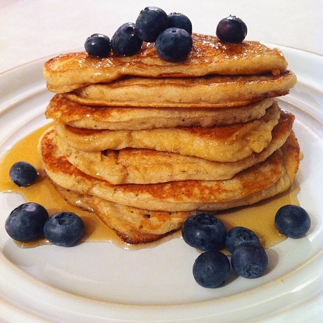

Home
Pancakes

Pancakes - basic batter
Make traditional thin pancakes by mixing flour, milk, eggs and a little salt into a smooth batter.
Fry the batter into thin and tasty pancakes and serve with a sweet jam or savory side dish.
Ingredients
- 2 1/2 cups wheat flour
- 1/2 tsp salt
- 6 dl milk
- 3 eggs
- Butter (for frying)
- Jam, berries or fruit for serving
Steps
A batch of 4 servings makes 8-10 pancakes depending on the size of the frying pan.
-
Mix flour and salt in a bowl. Whisk in half of the milk and whisk until smooth.
Whisk in the rest of the milk and eggs. Let the batter rest for about 10 minutes.
- Fry thin pancakes in a little butter, for each pancake, in a frying or pancake pan.
- Serve with jam, berries or fruit or with savory side dishes such as Shrimp Salsa with cucumber and lime,
Smoked salmon with dill cream or Avocado Scramble with bacon and tomato.